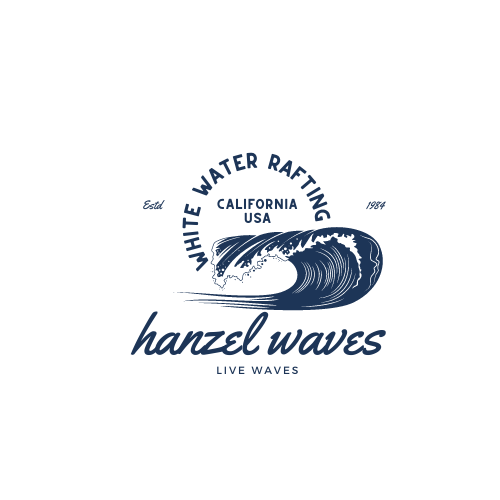

Overview
Purpose
Hanzel Waves white water rafting company provides individuals and groups an exciting and adventurous outdoor activity which includes navigating through waves and turbulent waters using specialized rafts and equipment.
Our company strives to provide clients with a safe and pleasurable journey while promoting responsibility for the environment and love for the world around us.
We also offer private tours of scenic waterways and natural landmarks, as well as education and training in white water rafting approaches, techniques and safety measures.
The main goal of our organization is to give everyone exceptional and thrilling moments while spreading an appreciation for the natural world and the significance of sustainable outdoor activity.
Audience
Hanzel Waves offers thrilling and unforgettable experiences for adventure seekers and outdoor enthusiasts of all ages.
Our trips and offers are made up for individuals, groups, corporations, families who have a stable financial situation and are looking for a memorable experience to enjoy.
Our user-friendly website offers optimized accessibility for different devices and web browsers to ensure a smooth experience for everyone.
Hanzel Waves trips and offers are available through web browsers on your devices, such as laptop, desktop, computer, tablet, or smartphone.
No matter your background or experience level, our company offers something for everyone.
Here is a breakdown of our primary audience:
FAMILIES:
Our organization provides plenty of river activities, including Class I and II rapids, that are suited to families with children. Bring the kids along for a fun and safe introduction to rafting.
GROUPS OF FRIENDS:
Gather your fellow sailors and set journey for a challenging moment on the water! Our Class III and IV rapids will offer an adrenaline-pumping adventure and a wonderful bonding experience.
SOLO TRAVELLERS:
Looking for an exciting and exhilarating outdoor experience as a solo traveler? For individuals looking for an exceptional challenge, our white water rafting adventures offer a thrilling journey.
CORPORATE GROUPS:
Take a day off from the office and go out with your team to engage in team-building activities and experiences.
OUTDOOR ENTHUSUASTS:
Our white water rafting trips are ideal for you if you enjoy being outside and are always looking for adventures to try. You can enjoy the beauty of nature and the adrenaline rush of the rapids on one of the numerous multi-day tours.
Join us for a whitewater rafting journey that will leave you with memories that last a lifetime!
LIVE WAVES! TRY HANZEL WAVES!
Branding
Website Logo
Style Guide
Color Palette
Palette URL:
https://coolors.co/223959-546c84-8c9cac-f8d557-ffed90| Primary | Secondary | Accent 1 | Accent 2 |
|---|---|---|---|
| [#223959] | [#546c84] | [#8c9cac] | [#f8d557] |
Typography
Heading Font: Oxygen
Paragraph Font: Ubuntu
Normal paragraph example
The best Whitewater Rafting in Colorado, White Water Rafting Company offers rafting on the Colorado and Roaring Fork Rivers in Glenwood Springs. Since 1974, we have been family owned and operated, rafting the Shoshone section of Glenwood Canyon and beyond.
Colored paragraph example
Trips vary from mild and great for families, to trips exclusively for physically fit and experienced rafters. No matter what type of river adventures you are seeking, White Water Rafting Company can make it happen for you.
Navigation
Site Map
Wireframes
Home